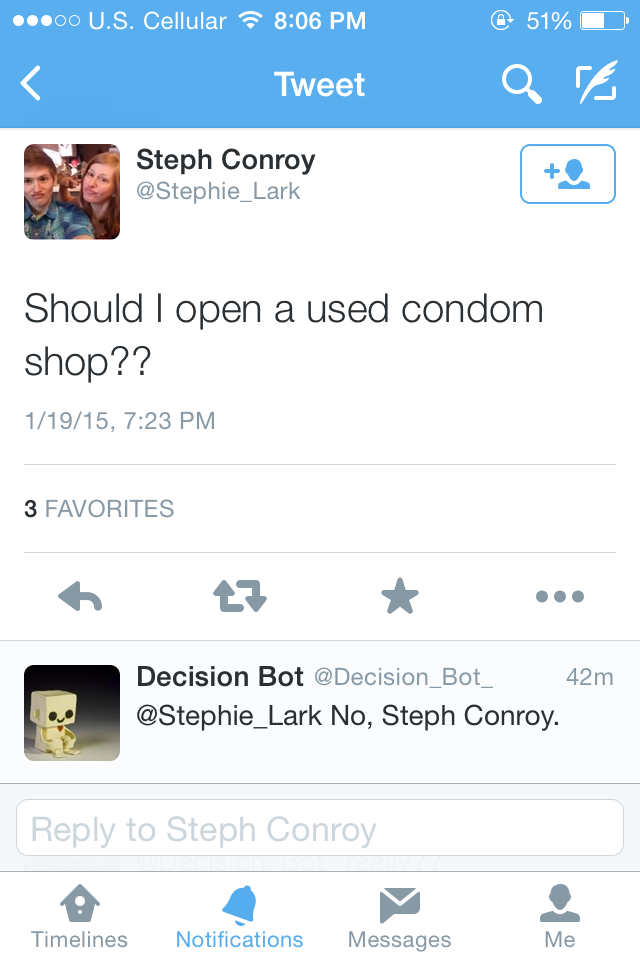

I made a twitter bot, @decision_bot_, that finds recent tweets containing the words "Should I" and replies with a yes or no answer. I coded the bot with Ruby and the Twitter gem. I deployed it to Heroku and use the Heroku Scheduler to run the bot every five minutes.
Since the bot randomly replies yes or no, sometimes it gives out good advice, and other times the advice is awful.
Here are some examples of good advice:
...and the not-so-good advice:
Questions? Comments? Don't hesitate to contact me!